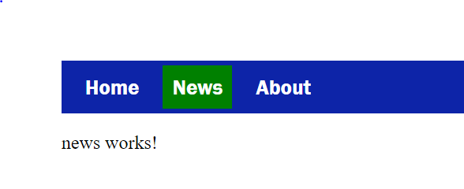

1. შექმენით როუტინგი eager loading ით მოცემული მენიუების მიხედვით , home, news, about. როუტინგი დაამისამართეთ content დივში
home ზე დჭერის შემდეგ გადავიდეს HomeComponent ზე და ა.შ;
2. შექმენით 404 Error Page ნებისმიერი არასწორი როუტის აკრეფის დროს გადავიდეს 404 ზე;
3. თითოეულ ტაბს გაუკეთეთ activeLink რომელიც გულისხმობს ტაბზე დაჭერის შემდეგ ამ ტაბის მწვანე ფონის მიცემას, გამოიყენეთ routerLinkActive

4. about ტაბში გვაქვს Nav To Home ბათონი, რომელზე დაკლიკების შემდეგ უნდა მოხდეს Home ზე გადამისამართება
5. about ტაბში გვაქვს Nav To Home With ID ბათონი, რომელზე დაკლიკების შემდეგ უნდა მოხდეს Home ზე გადამისამართება და პარამეტრებში გაყვეს 12.
ასე რომ გამოვიდეს http://localhost:4200/home/12
6. about ტაბში გვაქვს Nav To Home With Query ბათონი, რომელზე დაკლიკების შემდეგ უნდა მოხდეს Home ზე გადამისამართება და query პარამეტრებში გაყვეს შემდეგნაირად.
ასე რომ გამოვიდეს http://localhost:4200/home?id=12&name=test